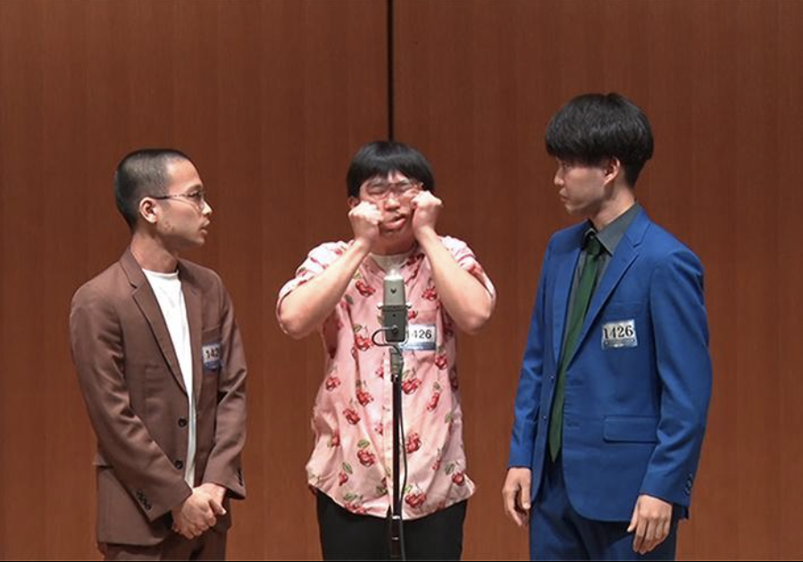

現在
NSC
に所属している、吉本興業の若手芸人
3人組の漫才師です！
最近ではコントも少しやっているようです…(小声)
彼らは、早稲田大学のサークル
『早稲田大学お笑い工房LUDO』
の卒業生でもあります！

彼らのお写真をM-1グランプリ公式さんから拝借しました
これは漫才中の彼らです！このネタ、かなりおもしろネタなのですが残念ながら現在見られるサイトがなく…
よければ別の最高おもしろネタを載せておきますので、ぜひ！彼らのYoutubeチャンネルに載っています！👉
【動画はこちら】
ではここで、彼らのプロファイルを紹介します！！
画像左側から、茶色のシックな衣装がビシッと決まっている男性は
金山翔也さんです！
照山おうちごはんの漫才は、彼のキレッキレなツッコミがマストです！
画像中央の男性は、
ほかぞのさんです！
まさに、照山おうちごはんのボケの要！独特な雰囲気は、彼にしか出せない魅力の一つです！
そして画像右側の、目を惹くブルーの衣装に身を包んだ男性は、
O竹さんです！
照山おうちごはんの元気印！通る声と、爽やかな風貌で多くの人を魅了しています！
彼らは大学お笑い出身であり、当時の同期には、現在吉本興業所属1年目の『伝書鳩』さん、
GATE所属1年目の『友田オレ』さん、
グレープカンパニー所属1年目の『惹女香花』さんなどがいらっしゃいます！
大学お笑いでは複数のコンビやユニットを組むことが可能であり、照山おうちごはんの皆さんも様々な方と組んでいました！
そして、実は照山おうちごはんの3人は、元々は各々が2人組のコンビを組んでいました！
当時は、金山さん×O竹さんの『 クラシキ 』、金山さん×ほかぞのさんの『 はぐれポプラ 』が特に有名でした！
当時の面白ネタも、先ほどのリンクから飛べるYoutubeに載っているのでぜひ！！
(実際の画像を引用してきました)↓↓
掲載動画はありませんが、O竹さん×ほかぞのさんの『照チごはん』というコンビもあるのでいつか見られたらレアです(小声)
そんな3人がタッグを組み、最強トリオになったのがまさに照山おうちごはん！！大注目の若手芸人さんであること間違いなしです！！
ここまで、『照山おうちごはんの魅力』と題し、彼らの紹介をしてきましたが………
正直、全然伝えきれていない！！
百聞は一見に如かずとは言いますが、まさしく皆さんには、彼らの魅力をもっと肌で感じてもらいたいです！！
現在NSC在学中は、外部に発信される情報は少なく…定期ライブの開催も無くなってしまっています(TT)
しかし4月には、晴れて彼らも吉本興業1年目に！！ライブの機会がぐっと増えるので、ぜひ皆さんも足を運んでみてください‼️
大学お笑い時代に同期として共に切磋琢磨してきた仲間たちとの絡みや主催ライブにも期待が高まります‼️
魅力満点！！期待の若手芸人、『照山おうちごはん』!!
ぜひ、注目してみてはいかがでしょうか(^^)🎵
最後に彼らのSNSのリンクも載せておきますので、チェックしてみてください！
【金山さんのXアカウント】
【O竹さんのXアカウント】
【ほかぞのさんのXアカウント】